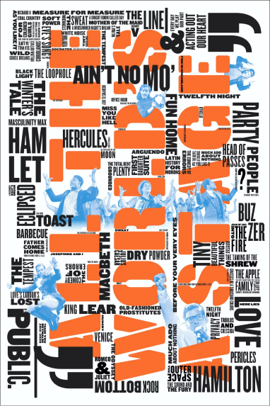

Scher is one of the most influential and prolific graphic designers in the world. She straddles a line between pop culture and fine art, and boasts clients that range from Microsoft and Adobe to Shake Shack and the MoMA. Iconic, smart, and accessible, her images and eclectic typography have entered the American vernacular.
Scher was involved with the graphic identity of the Public Theater, a program that would eventually influence much of the graphic design created for theatrical promotion and for cultural institutions in general.
After this campaign, The Public's typographic style popped up everywhere, from magazine layouts to advertising for other shows.
Scher's graphics for the original kiosk displayed a visual sophistication appropriate to the area. The signage combined the aesthetics of the area's art deco “23 Skidoo” heyday with the direct appeal of the typical fast food stand. Whether in Tokyo, Miami, London or Doha, the identity communicates the Shack spirit and helps tie together a brand that has become shorthand for the growing category of upscale, fast-casual dining.